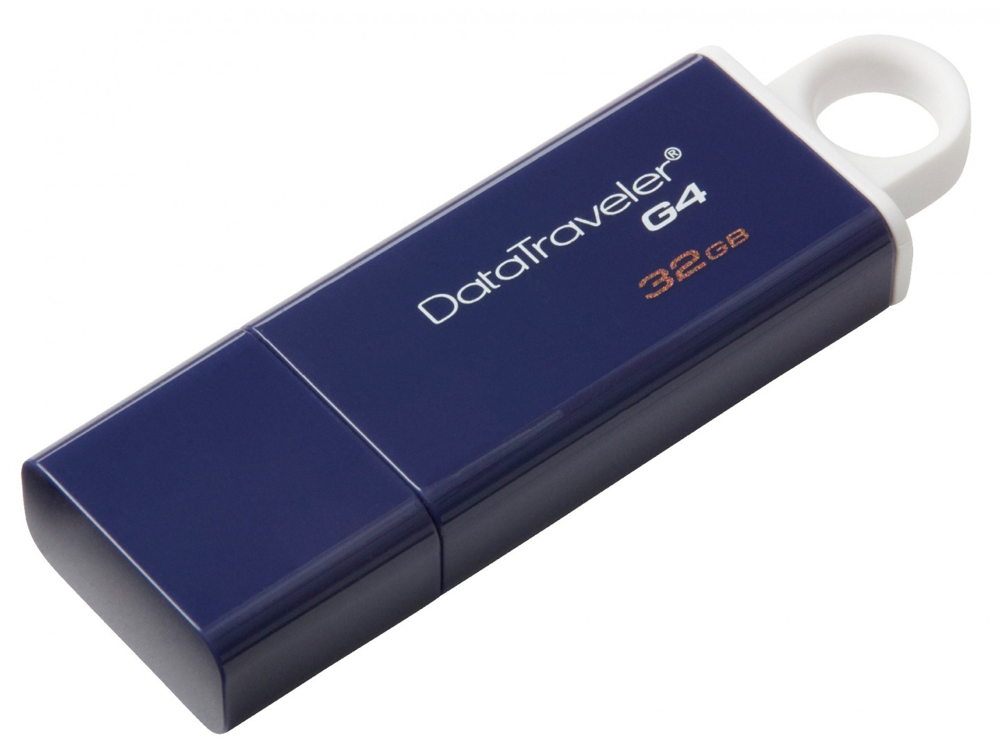

USB-накопитель DataTraveler I G4 компании Kingston поддерживает интерфейс USB 3.0 для быстрой и удобной передачи музыки, видео и других данных. Практичная конструкция и стильные цвета делают этот накопитель идеальным решением для повседневного использования на работе, дома, в школе или любом другом месте. Накопитель имеет обратную совместимость с интерфейсом USB 2.0, что позволяет пользователям перейти в будущем на 3.0 без замены накопителя.